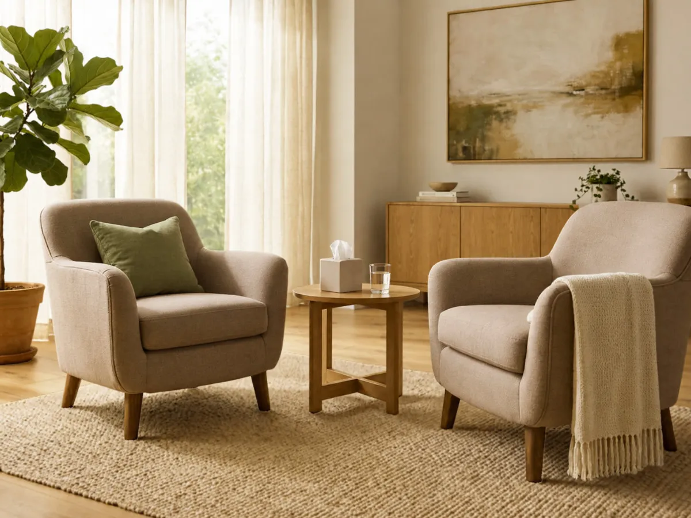

Psycholoog in Nijmegen: de juiste praktijk voor jouw hulpvraag
Bijgewerkt op 23 november 2026.
In Nijmegen werken honderden psychologen en therapeuten. Dat maakt kiezen lastig, zeker als je je al niet goed voelt. Daarom zetten we per hulpvraag een paar praktijken op een rij. We zetten erbij wat ze zelf zeggen over de wachttijd.

Eerst even dit
Wil je dat je zorgverzekering de behandeling betaalt? Dan heb je bijna altijd een verwijsbrief van je huisarts nodig. Je huisarts of de praktijkondersteuner (POH-GGZ) kan ook zelf al veel voor je doen, en helpt je kiezen.
Is de wachttijd te lang? Bel dan je zorgverzekeraar en vraag om wachtlijstbemiddeling. Denk je aan zelfdoding? Bel dan meteen 113 of 0800-0113, dag en nacht en gratis.
Zo hebben we gekozen
We lazen in november 2026 de websites van de psychologen in onze bedrijvengids. Per hulpvraag kozen we praktijken die duidelijk zeggen waarin ze goed zijn. Wachttijden veranderen snel, dus vraag ernaar als je je aanmeldt.
Angst, somberheid en stress
Absolute Psychologen: veel therapievormen onder één dak
Aan de Oranjesingel werkt een team van psychologen en psychotherapeuten. Ze helpen bij angst, depressie, stress, trauma, rouw en relatieproblemen, met onder meer cognitieve gedragstherapie, EMDR en schematherapie.
Volgens de site wacht je gemiddeld tien weken op je intake. Daarna kun je meteen beginnen.
Goed voor: wie niet precies weet welke therapie past.
Laenen Psychologie: kort en gericht
Laenen Psychologie aan de Groesbeekseweg geeft korte behandelingen aan volwassenen vanaf achttien jaar, binnen de basis-ggz. De praktijk helpt ook bij eetproblemen en werkt met EMDR.
Goed voor: wie met een paar gesprekken verder wil.
Praktijk Van Geuns: korte wachtlijst, ook online
Deze gz-psycholoog aan de Oranjesingel geeft korte behandelingen in de basis-ggz. Op de site staat dat de wachtlijst kort is. Je kunt ook online behandeld worden.
Goed voor: wie liever snel begint.
Trauma en EMDR
Praktijk Hopman: specialistische ggz
Praktijk Hopman behandelt volwassenen met angst, trauma, depressie en klachten door werk. Er wordt gewerkt met cognitieve gedragstherapie en EMDR. De praktijk geeft zowel korte als langere, specialistische behandelingen.
Goed voor: wie al eerder hulp had en meer nodig heeft.
Psychologiepraktijk Vivir: na een zware bevalling
Vivir is gespecialiseerd in trauma en PTSS, en vooral in klachten rond zwangerschap en bevalling. Er is ook een groep voor vrouwen met lichte klachten na de bevalling.
Gesprekken kunnen in de praktijk, online of tijdens een wandeling.
Goed voor: moeders die een bevalling niet loslaat.
Burn-out en werkstress
INNside Psychologie: als werk je te veel wordt
INNside richt zich op psychische klachten die met werk te maken hebben, zoals stress en spanning op het werk. De praktijk zit aan de Van Heutszstraat in Oost.
Goed voor: werkenden die thuis zitten of daar bang voor zijn.
Praktijk de Vrijgever: burn-out, angst en paniek
Aan de Graafseweg helpt Praktijk de Vrijgever bij burn-out en bij angst- en paniekaanvallen. Op de site vind je ook gratis online uitleg over paniekklachten.
Goed voor: wie last heeft van paniekaanvallen.
ADHD en autisme
BreinVitaal: vanaf zestien jaar
BreinVitaal is er voor jongeren vanaf zestien jaar en volwassenen met ADHD of autisme. De praktijk behandelt ook slaapproblemen. De intake kan in de praktijk of online.
Goed voor: jongvolwassenen met ADHD of autisme.
Kinderen en jongeren
Anne Hermans: kinderpsycholoog in Lindenholt
Anne Hermans helpt kinderen en jongeren van vier tot achttien jaar. Ze doet onderzoek naar wat er speelt en behandelt. De praktijk zit in Wijkgezondheidscentrum Lindenholt.
Goed voor: ouders in Dukenburg en Lindenholt.
Hoge & Partners: psychologen en orthopedagogen
Bij Hoge & Partners kun je terecht voor psychologische en opvoedkundige hulp voor je kind. Het team van psychologen en orthopedagogen werkt ook samen met scholen.
Goed voor: ouders met zorgen over hun kind op school.
Relatieproblemen
Praktijk Bind: geen wachtlijst
Praktijk Bind helpt stellen die vastlopen in hun relatie. Volgens de site is er geen wachtlijst, dus je kunt meteen beginnen. Gesprekken kunnen ook online.
Goed voor: stellen die snel hulp willen.
Cécile van de Zand: EFT-relatietherapie
Cécile van de Zand werkt al 35 jaar als therapeut. Ze geeft EFT-relatietherapie, een bekende methode om weer dichter bij elkaar te komen. Er is nu geen wachtlijst, en je kunt eerst een kort kennismakingsgesprek doen.
Goed voor: stellen die al lang samen zijn.
Ouderen, eetstoornis of hersenletsel
Disselhorst Ouderenpsychologie
De praktijk van Claudia Disselhorst richt zich helemaal op psychologische hulp aan ouderen. De gemiddelde wachttijd is volgens de site veertien weken.
Goed voor: ouderen en hun familie.
Amarum: hulp bij een eetstoornis
Amarum, onderdeel van GGNet, helpt jongeren vanaf dertien jaar en volwassenen met een eetstoornis, zoals anorexia of boulimia. Familie wordt bij de behandeling betrokken.
Goed voor: wie worstelt met eten, en hun naasten.
Altervita: na hersenletsel
Altervita is een kleine praktijk voor volwassenen en ouderen met niet-aangeboren hersenletsel, bijvoorbeeld na een beroerte of ongeluk, die daarbij psychische klachten hebben.
Goed voor: wie na een beroerte niet meer de oude is.
Ook goed
- Praktijk Grondsteen in Lent helpt bij rouw en verlies.
- PerformWise is een sportpsycholoog voor sporters en artiesten die beter willen presteren onder druk.
- Edwin Keulers zegt hulp te bieden zonder wachtlijst.
Veelgestelde vragen
Heb ik een verwijsbrief nodig voor een psycholoog?
Wil je dat je zorgverzekering betaalt, dan meestal wel. Je huisarts schrijft die verwijsbrief. Zonder verwijsbrief betaal je de behandeling zelf.
Welke psycholoog in Nijmegen heeft een korte wachttijd?
In november 2026 zeiden Praktijk Van Geuns, Praktijk Bind en Cécile van de Zand een korte of geen wachtlijst te hebben. Bij Absolute Psychologen wacht je gemiddeld tien weken op de intake. Vraag het na als je je aanmeldt.
Wat doe ik als de wachttijd te lang is?
Bel je zorgverzekeraar en vraag om wachtlijstbemiddeling. Zij zoeken mee naar een praktijk waar je sneller terecht kunt.
Waar vind ik een psycholoog voor mijn kind?
Anne Hermans in Lindenholt helpt kinderen van vier tot achttien jaar. Ook Hoge & Partners in Oost is er voor kinderen en jongeren.